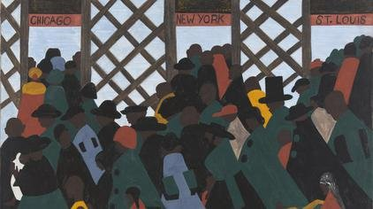

The Migration Series, Panel 1
Jacob Lawrence · 1940–41 · Casein tempera on hardboard · 30.5 × 45.7 cm · The Phillips Collection, Washington, D.C.
In copyright. Look and learn: shown for study, not for download.
Jacob Lawrence was twenty-three when he painted the sixty panels in 1940 and 1941, on a fellowship from the Julius Rosenwald Fund that paid for his studio. He made his own casein tempera and worked on all the panels at once, laying them out and putting down one colour across every scene before moving to the next, starting with black. Each panel is 12 by 18 inches and carries a one-sentence caption. The Phillips Collection holds the odd-numbered panels and the Museum of Modern Art the even ones.